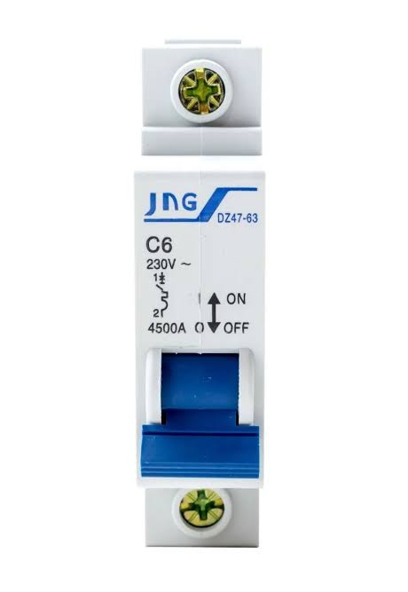

Programação Semanal
| Dia da Semana | Produto/Atividade | Quantidade | Descrição |
|---|---|---|---|
| Segunda-feira | Cloro Granulado | 720g | Aplicar pela manhã para desinfecção e esfregar as paredes e fundo. |
| Segunda-feira | Oxidante Genco | 1,8 kg | Tratamento completo de oxidação. |
| Segunda-feira | Algicida de Choque | 1260ml | Somente se houver algas visíveis |
| Terça-feira | Algicida de Manutenção | 900ml | Prevenção contra algas (aplicado pela manhã). |
| Terça-feira | Limpeza do Filtro | - | Realizar retrolavagem e enxágue. |
| Quarta-feira | Cloro Granulado | 720g | Aspiração completa do fundo (aplicado pela manhã). |
| Quarta-feira | Clarificante | 270ml | Somente à noite, se a água estiver turva |
| Quinta-feira | Algicida de Manutenção | 900ml | Prevenção contra algas e verificação do pH. |
| Sexta-feira | Cloro Granulado | 720g | Inspeção geral e remoção de detritos (aplicado pela manhã). |
| Sexta-feira | Clarificante | 270ml | Somente à noite, se a água estiver turva |
| Sábado | Limpeza do Filtro | - | Retrolavagem e enxágue do filtro. |
| Domingo | Cloro Granulado (se necessário) | 720g | Verificar condições da água e ajustar se necessário. |
Passo a Passo: Limpeza do Filtro
Configure os registros da piscina para que a filtragem ocorra corretamente.
Passo 1: Desligue a bomba
Antes de alterar qualquer configuração, desligue a bomba para evitar danos ao sistema.

Passo 2: Configure a válvula do filtro
Gire a válvula seletora para a posição "retrolavar".

Passo 3: Ajuste os registros
Abra os registros de aspiraçao e do esgoto, e feche o registro do retorno.


Passo 4: Ligue a bomba e inicie a filtragem
Ligue a bomba e deixe a filtragem funcionando por pelo menos 6 horas.
Dicas Importantes
- Cloro deve ser aplicado segunda, quarta e sexta-feira pela manhã.
- Algicida de Manutenção deve ser aplicado terça e quinta-feira.
- Algicida de Choque: aplicar somente se houver algas visíveis.
- Limpeza do Filtro: realizar retrolavagem e enxágue terça e sábado.
- Clarificante: aplicar à noite se a água estiver turva (dosagem de 270ml).
- Verifique e ajuste o pH pelo menos 2 vezes por semana (ideal: 7.2 a 7.6).
Como Deixar a Piscina Filtrando
Siga os passos abaixo e confira as imagens para ver quais registros abrir e fechar:
- Desligue a bomba para evitar danos ao sistema. 
-
Gire a válvula seletora para a posição "Filtrar".

-
Abra o registro do retorno.

-
Feche o registro do dreno de esgoto para evitar que a água seja desviada.